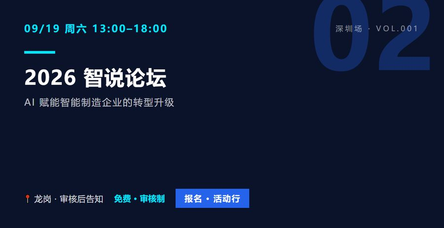
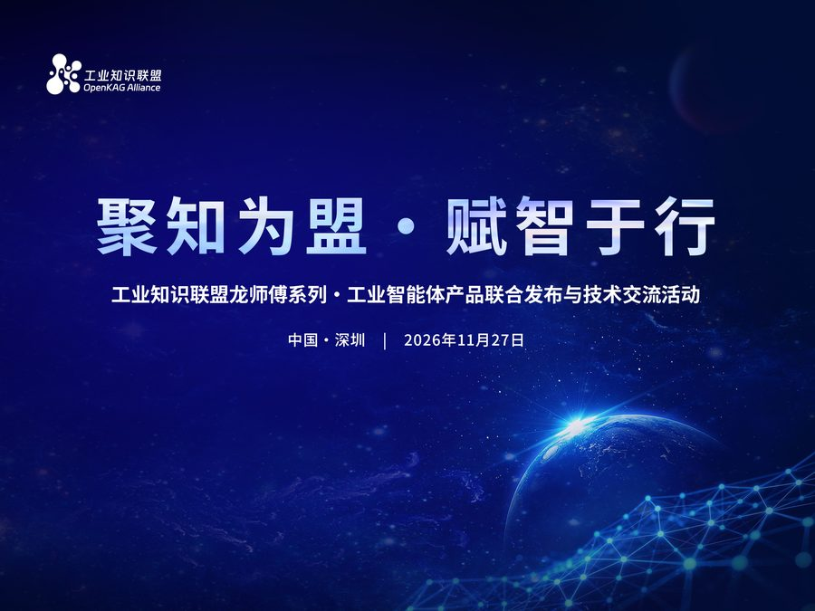
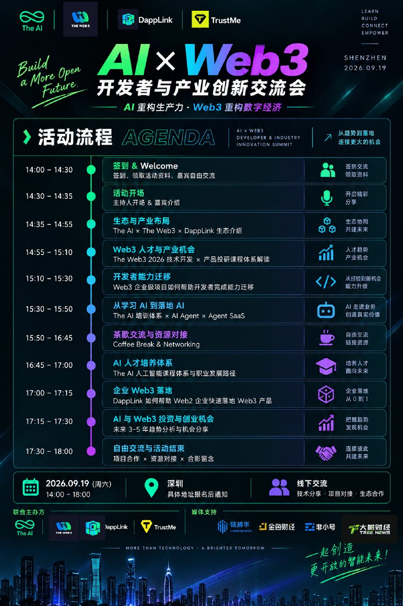
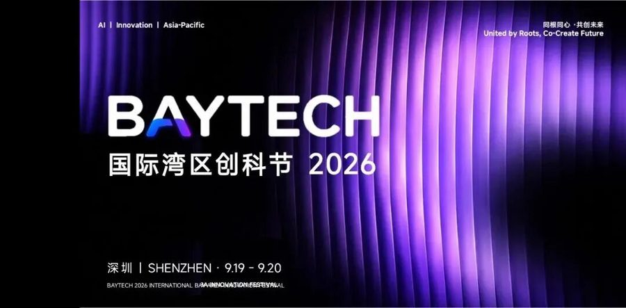
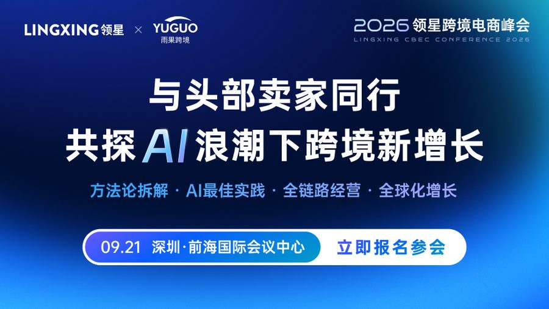

BAY AREA AI CALENDAR / VOL.001
湾区AI日历
找 AI 活动，认识 AI 圈的人
找 AI 活动，认识 AI 圈的人。
深圳｜广州｜香港｜佛山｜东莞
2026.11.26 — 11.30 · 第 001 期 · 每周四更新
大家好，我是 Kenny。
这是「湾区 AI 活动周报」第 001 期。上周 APEC 收尾，这周高交会接上——深圳的活动密度，比 9 月那波还高。
本周的关键词是：交付 七场活动几乎都在回答同一个问题：Agent 怎么从「会聊天」变成「把活干完」。展会在讲产业链，论坛在讲方法论，工作坊在讲怎么落地——真正稀缺的是后两类。
深圳 · 本周共 7 场 · 按开始时间排序
11.26 – 28 高交会 · 亚洲 AI 产业链展 今天开幕
11.26 – 30 ICI Week（IAICC + BCON） 今天开幕
11.27 周五 龙师傅工业智能体发布 还剩 1 天
11.27 周五 港大经管 · Agent 重塑生产力 还剩 1 天
11.28 周六 WorkBuddy FDE 精英班 还剩 2 天
11.28 周六 阿里云 Agent Context 还剩 2 天
11.29 周日 WorkBuddy 开发者沙龙 还剩 3 天
周四 两场大展同时开门。它们不解决「Agent 怎么落地」，但决定你后面半年用什么零件、跟谁合作。

① 第二十八届高交会 · 亚洲人工智能产业链展 & 亚洲机器人产业链展
📍 深圳国际会展中心（宝安）｜⏱ 11.26–11.28 全天｜主办：高交会组委会
报名：观展登记以高交会官方公布为准 · 今天开幕
这是本周唯一「不用挑」的一场——它大到可以当背景板。高交会首次单设「人工智能馆」+「机器人馆」：算力设施、AGI 大模型、AI Agent、人形机器人、灵巧手、核心零部件，一条产业链从头摆到尾。同期还有 AI 新质生产力对话和全球具身智能发展峰会。
逛法建议：找供应链、找客户的，直接去机器人馆的零部件区；看趋势的，蹲「AI 新质生产力」那场对话。别想着两天看完。
这类国家级展会通常免费但要提前登记，别等到现场排队。
适合谁：制造业与硬件从业者、找供应链的创业者、想看产业链全貌的投资人，以及只想先感受一下规模的人。
海报：高交会官方物料

② 国际创意智能周 ICI Week 2026（IAICC · BCON Shenzhen · OCG）
📍 深圳（IAICC 在南山清华研究院新大楼）｜⏱ 11.26–11.30｜主办：CGGE
报名：售票制 · 全通票 ¥2,880 / IAICC 单日 ¥1,480 / BCON 双日 ¥1,580 · 早鸟已于 11.20 截止
华南少见的「AI × 创意产业」垂直大会，今年升级成五天。11/27 是 IAICC 旗舰日（主题演讲 + 产业对话）；11/28–29 是亚洲唯一的 Blender 官方大会 BCON Shenzhen；同期还有 OCG 游戏动漫展——IP 共创街区、AI 体验舱、3D 打印工作坊。
如果你做游戏、3D、短剧、数字艺术，这周的密度比高交会更对味：AI+3D、ComfyUI 图像与视频、AI 音频、大模型工具链都有专场。
这是本周唯一「付费也值」的场——工具链的东西，看别人做一遍，胜过自己踩三天坑。
适合谁：游戏 / 3D / 动画 / 短剧 / 数字艺术的创作者，以及想把 AIGC 塞进生产管线的工作室。
海报：ICI Week 官方主视觉
周五 这两场在同一天、同一条主线上：一个讲产线怎么接住智能体，一个讲企业怎么算这笔账。

③ 「聚知为盟 · 赋智于行」龙师傅系列工业智能体联合发布与技术交流会
📍 龙岗 · 深圳龙岗珠江皇冠假日酒店一楼聚龙厅｜⏱ 11.27 08:00–16:30｜主办：广东省数字化学会（工业知识联盟）× 华为云等
报名：报名制 · 需先注册 OpenIndustry 社区，审核通过短信通知
本周最「硬」的工业场。一次发布四样东西：OpenIndustry 开放社区 V2.0、龙师傅系列工业智能体、工业智能体平台（AIP）、工业智能平台（Foundry）。
含金量在示范项目：白车身建模、选型设计、仿真校核、三电维修——全是产线上的真环节，不是 PPT 里的流程图。上午主会场发布 + 签约，下午五个分会场（华为云、深思造物、泊松、智语天工、中汽软件）各讲各的落地。
成果展全天开放，家电、汽车、电子三条线的智能体可以现场上手。
适合谁：制造业数字化负责人、工业 AI 开发者、产线工艺团队，以及想找工业场景的 ISV。
海报：工业知识联盟官方物料

④ 湾区产业论道：Agent 如何重塑企业生产力
📍 香港大学经管学院深圳校区（福田 · 广电金融中心）｜⏱ 11.27 14:30–16:40｜主办：港大经管深圳校区
报名：免费 · 需审核，通过邮件通知 · 不设直播，线下名额有限
主讲是商汤科技大模型产品副总裁贾安亚，主题一句话：让 AI 从「回答问题」走向「交付结果」。
它跟龙师傅那场正好互补：龙师傅讲产线端怎么接住智能体，这场讲企业端怎么评估它的产品形态、落地路径与生产力兑现。面向企业管理者与技术决策者。
半天，14:30 开始，跟龙师傅不冲突——上午龙岗、下午港大，一天能赶两场。
适合谁：企业管理者、技术决策者，以及正在算「Agent 到底值多少钱」的人。
海报：港大经管学院官方物料
周六 这周唯一的「二选一」。两场都动手，方向完全不同：一个改你的工作流，一个补 Agent 的数据上下文。

⑤ WorkBuddy FDE 精英班 · 深圳场（深度班）
📍 南山 · 海天二路 33 号（审核通过后通知）｜⏱ 11.28 09:30–18:00｜主办：腾讯云架构师技术同盟
报名：审核制 · 小班限额
全天实训，不是听讲。报名时要填「AI 工具使用现状、业务难点、希望交流的议题」，议程按报名者的难点定制——你带什么问题进场，决定你带走什么。
同系列 12 月还要去广州（12/12）、东莞（12/19）、苏州、上海——深圳这场是首站。
注意：审核制 + 小班限额，今天不动手，周六大概率没位置。
适合谁：想带着真实业务难题做一天深度改造的 FDE、架构师、业务技术负责人。
海报：腾讯云 WorkBuddy 官方物料

⑥ Agent Context：动手搭建懂业务的数字员工｜阿里云瑶池数据库
📍 南山 · 深铁皇冠假日酒店 5F 多功能厅（深南大道 9819 号）｜⏱ 11.28 13:30–17:10｜主办：阿里云瑶池数据库 × Qoder
报名：免费 · 需报名 · 必须带笔记本电脑（空手到场无法参与实操）
这场把「Agent 不懂业务」拆得最具体。表结构、口径、权限、文档散落在数据库和知识库里，模型再强也接不上。Agent Context 就是喂给智能体的那一层上下文。
纯动手：从零搭一个能回答业务问题、能办事的数字员工。带真实业务表和文档去，收益最大；空手去，就只是看演示。
跟 FDE 精英班时间重叠，只能选一个：想带着真实业务难题做一天深度改造，选 FDE；想先把手弄脏、又不想等审核，选这场。
适合谁：后端 / 数据工程师、DBA、业务系统负责人，以及被「Agent 一问业务就懵」卡住的人。
海报：阿里云官方物料 · 完整议程见海报
周日 这周门槛最低的一场，也最有可能让你当场做出点东西。

⑦ 「由知到行 · AIGC 从理论到实践」WorkBuddy 开发者沙龙 · 深圳站
📍 腾讯数码大厦北塔（南山听海大道 5212 号）｜⏱ 11.29 13:30–17:30｜主办：腾讯云开发者社区 × WorkBuddy
报名：免费 · 需报名 · 13:30 签到，14:00 开讲
广州站 11/28、深圳站 11/29，一个周末连赶两城。深圳这场是 11 月末门槛最低的实操型沙龙：专家分享 + 案例拆解 + 现场带练，另设 mini 黑客松和开放麦——可以带着自己的半成品上台。
它不讲模型参数，讲的是一个具体业务怎么被 AI 改写。对刚上手的人，这种「看一遍完整流程」的价值比听趋势大。
适合谁：开发者、FDE、创业者、产品与技术负责人、AI 工具重度用户。
海报：腾讯云 WorkBuddy 官方物料
两场不在 7 场名单里，但值得记一笔：
muShenzhen 创客城市季（11/29–12/18，20 天）：把整座深圳变成临时创客城市——白天在主基地深度工作，下午参访机器人和产线，晚上做 Demo。Garage 创客营开 100 个席位，适合想把深圳当实验室的人。
2026 深圳 AI 高质量教学高峰论坛（11/30–12/2）：焦建利、刘静波、雷斌领衔，多所标杆学校分享 AI 课堂落地案例，12/2 分学科工作坊现场产出教学设计与提示词。免培训费，面向校长、教研骨干与一线教师。
这 7 场我按「能不能带走东西」排了序，最实的在前。
如果只能做三件事：周六二选一（FDE 精英班 / 阿里云工作坊），周日去开发者沙龙，周五下午去港大听那场 Agent 论坛。三天连起来，正好是「企业怎么算账 → 数据怎么接上 → 自己怎么交付」一条线。
周六两场都要报名或审核，今天把名报掉最稳。
完整的深圳活动日历（含往期回顾、正在报名的 AI 赛事、AI 孵化器驻点地图）我维护在网站上，每场活动都有独立页面，区域、时间、主办方、报名入口都标好了。
在公众号后台回复「深圳」，查看本周全部场次。
线下见。🌆
Vol.001 本周五截止！深圳这 7 场 AI 活动还能报名
9 月那波：Agent Arena、腾讯云沙龙、百度大会一路排到周一
每日 每日湾区资讯：三栏速览，每条一句话
大湾区大事件 / 国内 AI / 海外，每天更新
赛事 大湾区 AI 赛事合集：还能报名的都在这
黑客松、创新大赛、创业赛，每场都标了截止日
加我微信，进 AI 活动群
活动搭子、组队约见、第一时间获取活动更新
长按识别二维码 · 备注「AI 活动」拉你进群
本文信息整理自主办方官方渠道（高交会官网、ICI Week 官网、工业知识联盟、港大经管深圳校区、腾讯云开发者社区、阿里云）。活动安排与报名状态可能随时调整，最终以主办方公布为准；海报为主办方官方物料。
· END ·
这里是「湾区AI日历」
找 AI 活动，认识 AI 圈的人。
每周更新大湾区线下 AI 活动精选，点击关注，星标订阅。
以上活动资讯由本号特别精选，欢迎点赞、点爱心、转发分享。